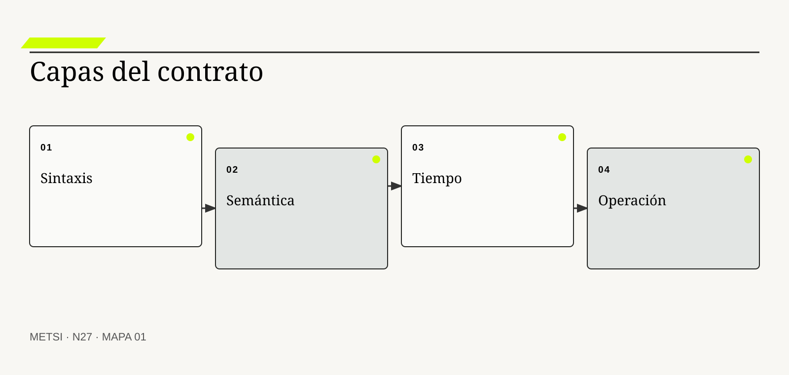
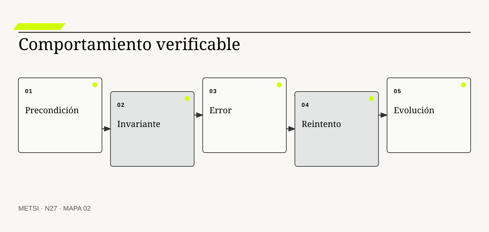
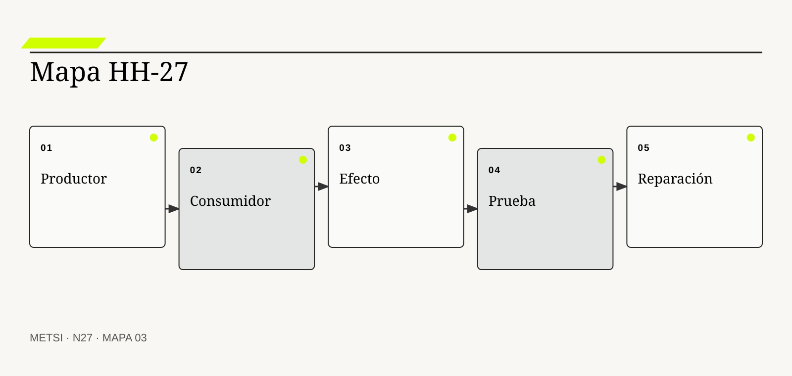

I
IETF
Define la semántica común de HTTP.

N27 diseña contratos sintácticos, semánticos, temporales y operacionales, y vincula conformidad técnica con significado compartido, comportamiento…
Contratos sintácticos, semánticos, temporales y operacionales
Ruta de lectura: problema, distinciones, decisiones, prueba, transferencia y preparación.
Nota. SIN NUM. identifica aparatos de orientación y referencia.
Seis voces para ampliar, contrastar y discutir N27.
Define la semántica común de HTTP.
Estandariza descripciones de interfaces HTTP.
Proporciona vocabularios para validar estructura.

Vincula lenguaje compartido con modelos de dominio.

Analiza datos, distribución, tiempo y fallas.
Sistematizaron patrones de integración empresarial.
N27 no resume estas fuentes ni las convierte en receta. Las pone en tensión para construir juicio profesional.
¿Qué debe acordarse para que dos partes no sólo intercambien datos válidos, sino que produzcan la misma consecuencia bajo tiempos y fallas reales?

N27 diseña contratos sintácticos, semánticos, temporales y operacionales, y vincula conformidad técnica con significado compartido, comportamiento observable y capacidad…
El canal externo envía al Hotel Horizonte un mensaje válido: la reserva quedó confirmada. El PMS acepta el esquema, registra el identificador y responde con éxito. Minutos después, Recepción descubre que la habitación accesible fue reasignada porque ambos sistemas interpretaban confirmada de manera distinta.
La sintaxis coincidía. La semántica no. Además, el canal esperaba respuesta en cinco segundos, el PMS conciliaba cada diez minutos y Operaciones no sabía quién debía intervenir cuando llegaban eventos fuera de orden. El contrato visible cubría campos; el contrato real incluía significado, tiempo y trabajo.
Un contrato operativo expresa qué puede enviarse, qué significa, cuándo conserva validez, qué estado cambia, qué error puede ocurrir, quién repara y cómo evoluciona. No elimina desacuerdos, pero los vuelve detectables antes de trasladarlos a una persona.
El equipo toma el episodio y separa cuatro capas. Define estructura y tipos, glosario de estados, ventanas temporales, precondiciones, idempotencia, errores, seguridad, versión y procedimiento de contingencia. Cada capa tiene una prueba distinta.
La documentación deja de ser una promesa abstracta de integración. Se convierte en un acuerdo verificable entre productores, consumidores, operadores y responsables de la consecuencia.
N27 recibe de HH-26 dependencias críticas y transforma cada vínculo en un contrato completo. El objetivo no es producir más especificaciones, sino impedir que una coincidencia técnica oculte una contradicción operativa.
HH-27 selecciona la integración entre canal y PMS. El expediente registra estructura, vocabulario, temporalidad, precondiciones, efectos, errores, seguridad, compatibilidad y operación. Luego prueba mensajes duplicados, demorados, fuera de orden y semánticamente contradictorios. La reserva sólo cambia de estado cuando todas las capas sostienen la misma consecuencia.
N27 diseña contratos sintácticos, semánticos, temporales y operacionales, y vincula conformidad técnica con significado compartido, comportamiento observable y capacidad de reparación.
N26 deja evidencia y decisiones abiertas que N27 utiliza sin reabrir su contenido. N27 diseña contratos sintácticos, semánticos, temporales y operacionales, y vincula conformidad técnica con significado compartido, comportamiento observable y capacidad de reparación.
N28 tomará esos contratos y decidirá qué evidencia de calidad exige cada riesgo. N27 no establece todavía el conjunto completo de atributos ni la suficiencia de sus pruebas.
IETF define semántica, mensajes y comportamiento de HTTP. En N27, ese aporte pone a prueba decisiones concretas y no funciona como respaldo ornamental. Su alcance se conserva en N27: ninguna referencia sustituye la evidencia del caso ni la autoridad necesaria para intervenir.
OpenAPI Initiative estandariza descripciones legibles por personas y máquinas. En N27, ese aporte pone a prueba decisiones concretas y no funciona como respaldo ornamental. Su alcance se conserva en N27: ninguna referencia sustituye la evidencia del caso ni la autoridad necesaria para intervenir.
JSON Schema define vocabularios para describir y validar estructuras JSON. En N27, ese aporte pone a prueba decisiones concretas y no funciona como respaldo ornamental. Su alcance se conserva en N27: ninguna referencia sustituye la evidencia del caso ni la autoridad necesaria para intervenir.
Evans, E. vincula lenguaje compartido con modelos y fronteras de dominio. En N27, ese aporte pone a prueba decisiones concretas y no funciona como respaldo ornamental. Su alcance se conserva en N27: ninguna referencia sustituye la evidencia del caso ni la autoridad necesaria para intervenir.
Kleppmann, M. analiza tiempo, distribución, consistencia y fallas en sistemas de datos. En N27, ese aporte pone a prueba decisiones concretas y no funciona como respaldo ornamental. Su alcance se conserva en N27: ninguna referencia sustituye la evidencia del caso ni la autoridad necesaria para intervenir.
Hohpe, G. y Woolf, B. aportan patrones para intercambios, mensajería y fallas. En N27, ese aporte pone a prueba decisiones concretas y no funciona como respaldo ornamental. Su alcance se conserva en N27: ninguna referencia sustituye la evidencia del caso ni la autoridad necesaria para intervenir.
Fowler, M. aporta patrones para discutir integración y evolución sin reducirlas a conectividad. En N27, ese aporte pone a prueba decisiones concretas y no funciona como respaldo ornamental. Su alcance se conserva en N27: ninguna referencia sustituye la evidencia del caso ni la autoridad necesaria para intervenir.
AsyncAPI Initiative extiende contratos a interacciones asincrónicas y orientadas a eventos. En N27, ese aporte pone a prueba decisiones concretas y no funciona como respaldo ornamental. Su alcance se conserva en N27: ninguna referencia sustituye la evidencia del caso ni la autoridad necesaria para intervenir.
W3C fundamenta procedencia mediante entidades, actividades y agentes. En N27, ese aporte pone a prueba decisiones concretas y no funciona como respaldo ornamental. Su alcance se conserva en N27: ninguna referencia sustituye la evidencia del caso ni la autoridad necesaria para intervenir.
ISO/IEC actualiza el modelo de calidad de productos y sistemas TIC. En N27, ese aporte pone a prueba decisiones concretas y no funciona como respaldo ornamental. Su alcance se conserva en N27: ninguna referencia sustituye la evidencia del caso ni la autoridad necesaria para intervenir.
NIST sitúa verificación y acceso en fronteras de confianza explícitas. En N27, ese aporte pone a prueba decisiones concretas y no funciona como respaldo ornamental. Su alcance se conserva en N27: ninguna referencia sustituye la evidencia del caso ni la autoridad necesaria para intervenir.
Pact Foundation prueba expectativas de consumidores contra productores. En N27, ese aporte pone a prueba decisiones concretas y no funciona como respaldo ornamental. Su alcance se conserva en N27: ninguna referencia sustituye la evidencia del caso ni la autoridad necesaria para intervenir.

Un contrato sintáctico define estructura, tipos, obligatoriedad y formato de un intercambio. La definición fija el objeto de decisión. Si el equipo de N27 no puede expresar qué compromiso organiza, la categoría funciona como etiqueta y no como instrumento.
No garantiza significado, oportunidad ni efecto correcto. La distinción evita que una palabra familiar oculte otro mecanismo. En N27, confundirlos cambia qué se observa, qué se acepta como avance y quién debe intervenir.
En contrato sintáctico, el recorrido causal debe mostrar qué condición habilita la acción, qué transformación ocurre y quién absorbe el resultado. Permite validar mensajes antes de procesarlos y detectar incompatibilidades estructurales. Si un salto depende sólo de una explicación oral, la estrategia todavía no puede gobernarlo.
La evidencia relevante para contrato sintáctico no se limita al resultado promedio. Esquemas, ejemplos y pruebas de validación sostienen su conformidad. N27 busca además casos negativos, diferencias entre poblaciones y señales de que la explicación elegida podría ser insuficiente.
Ejemplo. La reserva exige identificador, fecha, categoría y estado con tipos definidos. En N27, el episodio vuelve visible la relación entre ritmo, autoridad, evidencia y capacidad de reparación.
El tradeoff central de contrato sintáctico aparece entre anticipar y preservar opciones. Anticipar puede reducir coordinación y también fijar una premisa prematura; preservar opciones puede producir aprendizaje y también demorar una protección necesaria. La elección debe declarar cuál de esos costos acepta, durante cuánto tiempo y para quién.
La auditoría de contrato sintáctico termina con una pregunta de uso: ¿qué podría decidir ahora una persona que antes no podía? En N27, la respuesta debe nombrar una acción, una restricción y una evidencia, no sólo una comprensión mejorada.
Operacionalizar contrato sintáctico requiere asignar una unidad observable. El equipo define qué episodio contará, desde qué momento, con qué población y bajo qué fuente. Después compara al menos un caso ordinario con otro que fuerce excepción. Esta precisión en N27 evita que una conclusión general se sostenga sólo en ejemplos convenientes.
La decisión profesional no termina en adoptar contrato sintáctico. Se compara una ruta principal con una explicación rival, se explicita quién queda expuesto y se conserva un modo de revisar. Dos mensajes válidos pueden representar decisiones opuestas. El límite forma parte del diseño y no una nota posterior.
Un contrato semántico acuerda qué significa cada dato, estado y transición en un contexto de decisión. Conviene comenzar por su función profesional. Si el equipo de N27 no puede expresar qué compromiso organiza, la categoría funciona como etiqueta y no como instrumento.
No es un glosario aislado ni una etiqueta compartida. El contraste importa porque conduce a pruebas distintas. En N27, confundirlos cambia qué se observa, qué se acepta como avance y quién debe intervenir.
El mecanismo de contrato semántico no se presume por el nombre. Relaciona términos con reglas, autoridad, población y consecuencia. Debe localizarse dónde comienza, qué relaciones activa, qué demora introduce y qué capacidad de reparación queda disponible cuando la expectativa no se cumple.
Una afirmación sobre contrato semántico gana fuerza cuando puede reconstruirse desde fuentes independientes. Ejemplos límite, episodios y tablas de decisión revelan ambigüedades. La ausencia de señal también se interpreta: puede significar estabilidad, mala observación o exclusión del caso que más importa.
Ejemplo. Confirmada significa capacidad reservada y no sólo mensaje recibido. En N27, el episodio vuelve visible la relación entre ritmo, autoridad, evidencia y capacidad de reparación.
La escala modifica contrato semántico. Una solución válida para un equipo puede fallar cuando atraviesa sedes, turnos o proveedores porque aumenta la distancia entre señal y autoridad. Antes de ampliar, N27 prueba si la misma decisión conserva significado y reparación bajo esa nueva distribución.
Para evitar consenso aparente, contrato semántico se revisa con alguien afectado y con alguien responsable de reparar. Las dos perspectivas pueden valorar resultados diferentes y obligan a declarar la prioridad elegida.
En la práctica, contrato semántico atraviesa más de un área. Se identifican handoffs, esperas, decisiones y datos que cada participante puede ver. Cuando dos áreas usan evidencia distinta en N27, el expediente conserva la divergencia hasta determinar si representa error, perspectiva legítima o una brecha que la estrategia debe resolver.
En una revisión, contrato semántico debe responder tres preguntas: qué mejora, qué desplaza y qué vuelve más difícil de revertir. El significado cambia con contexto y necesita gobierno. Si esas respuestas cambian, también debe cambiar el compromiso, aunque el trabajo previo haya sido técnicamente correcto.
Un contrato temporal define ventanas, orden, vigencia, latencia y tratamiento de demora. El concepto adquiere valor cuando cambia una decisión. Si el equipo de N27 no puede expresar qué compromiso organiza, la categoría funciona como etiqueta y no como instrumento.
No se reduce a un timeout técnico. Su vecino conceptual puede parecer equivalente y no lo es. En N27, confundirlos cambia qué se observa, qué se acepta como avance y quién debe intervenir.
Comprender contrato temporal exige seguir la decisión en el tiempo. Establece cuándo una afirmación puede usarse y qué ocurre si llega tarde o fuera de secuencia. El análisis distingue condición, intervención, señal temprana y consecuencia para evitar atribuir a una práctica un efecto producido por otro cambio simultáneo.
La prueba de contrato temporal debe formularse antes de conocer el resultado. Relojes, trazas y pruebas con demora permiten contrastarlo. Se registra qué observación sostendría continuar, cuál obligaría a adaptar y cuál activaría detención o escalamiento.
Ejemplo. Un estado de habitación pierde validez después de una reasignación. En N27, el episodio vuelve visible la relación entre ritmo, autoridad, evidencia y capacidad de reparación.
El tiempo también altera contrato temporal. Una evidencia suficiente para explorar puede ser insuficiente para operar de forma permanente. Por eso se separan prueba local, compromiso transitorio y condición estable, y cada estado conserva fecha, alcance y responsable de revisión.
El registro de contrato temporal conserva una explicación rival. Si esa alternativa predice mejor el episodio siguiente, el equipo cambia de curso sin reescribir retrospectivamente lo que creía saber.
La gobernanza de contrato temporal incluye quién puede proponer, aprobar, ejecutar, observar y reparar. Esas funciones no se presumen por cargo ni por permiso técnico. N27 las prueba en un escenario donde falta la persona habitual, porque una capacidad que sólo funciona con conocimiento privado todavía no pertenece a la organización.
El juicio sobre contrato temporal incluye distribución de consecuencias. Los relojes no son perfectos y la operación necesita tolerancias explícitas. Una mejora agregada no alcanza si concentra espera, riesgo o trabajo invisible en un grupo sin autoridad para discutir la decisión.
Un contrato operacional define efectos, errores, escalamiento, observación y reparación alrededor de una interfaz. La definición fija el objeto de decisión. Si el equipo de N27 no puede expresar qué compromiso organiza, la categoría funciona como etiqueta y no como instrumento.
No es sólo un SLA ni una página de soporte. La distinción evita que una palabra familiar oculte otro mecanismo. En N27, confundirlos cambia qué se observa, qué se acepta como avance y quién debe intervenir.
La explicación operacional de contrato operacional conecta personas, reglas y tecnología. Conecta comportamiento técnico con responsabilidades de personas y equipos. Esa conexión permite decidir qué parte puede modificarse localmente y cuál requiere coordinación con otras autoridades o capacidades.
Para auditar contrato operacional, conviene combinar evidencia de diseño, ejecución y consecuencia. Ejercicios de falla e incidentes muestran si puede operarse. Ninguna fuente domina automáticamente; una especificación correcta puede convivir con una operación dañina.
Ejemplo. Recepción sabe cómo continuar cuando la confirmación queda indeterminada. En N27, el episodio vuelve visible la relación entre ritmo, autoridad, evidencia y capacidad de reparación.
Existe además una dimensión política en contrato operacional. La opción más eficiente puede reducir la capacidad de una persona para cuestionar una decisión o trasladar trabajo sin reconocerlo. N27 registra esa distribución y no la esconde dentro de un indicador agregado.
Una prueba adversa de contrato operacional introduce demora, ausencia de autoridad o dato incompleto. El objetivo de N27 no es cubrir todas las fallas, sino revelar si la estrategia mantiene una salida segura fuera del camino ordinario.
El indicador de contrato operacional se elige después de formular la decisión. Puede combinar tiempo, calidad, distribución y costo de reparación. Una cifra aislada rara vez explica el mecanismo. En N27, la lectura conjunta de señales evita optimizar velocidad mientras aumenta retrabajo, exclusión o dependencia.
La condición de cierre de contrato operacional no es perfección. Un procedimiento que depende de conocimiento privado no constituye capacidad. Es evidencia suficiente para el uso previsto, riesgo residual aceptado por autoridad y una ruta clara cuando el supuesto deje de cumplirse.

Precondición y poscondición declaran qué debe ser cierto antes y después de una operación. Conviene comenzar por su función profesional. Si el equipo de N27 no puede expresar qué compromiso organiza, la categoría funciona como etiqueta y no como instrumento.
No son comentarios opcionales sobre el camino feliz. El contraste importa porque conduce a pruebas distintas. En N27, confundirlos cambia qué se observa, qué se acepta como avance y quién debe intervenir.
Para que precondición y poscondición sea algo más que una etiqueta, debe existir una cadena examinable. Limitan estados válidos y vuelven comprobable el efecto prometido. La cadena incluye supuestos, handoffs y efectos laterales que una descripción ideal suele omitir.
El equipo no declara resuelto precondición y poscondición por acuerdo retórico. Pruebas de transición y registros de estado contrastan ambas condiciones. Una persona ajena al diseño debe poder repetir la prueba y comprender por qué el resultado habilita una decisión concreta.
Ejemplo. Sólo se asigna una habitación disponible y el resultado conserva trazabilidad. En N27, el episodio vuelve visible la relación entre ritmo, autoridad, evidencia y capacidad de reparación.
La mantenibilidad de precondición y poscondición se prueba mediante cambio deliberado. Se modifica una regla, una fuente o una dependencia y se observa quién detecta el impacto, cuánto tarda en responder y qué información necesita. En N27, si la respuesta depende de memoria privada, la capacidad todavía es frágil.
El costo de precondición y poscondición se observa tanto en presupuesto como en atención, espera, coordinación y dependencia. Lo que no figura en una factura puede seguir siendo el costo que define la viabilidad.
La transición asociada con precondición y poscondición necesita un estado intermedio explícito. Durante ese período conviven reglas, versiones o capacidades diferentes. N27 declara cuál rige para cada población, cómo se comunica y qué contingencia protege a quien podría quedar entre ambos sistemas.
El análisis de precondición y poscondición evita dos extremos: conservar por inercia y cambiar por identidad metodológica. Sistemas concurrentes pueden invalidar una precondición entre lectura y escritura. Entre ambos queda una decisión provisional con fecha, responsable y prueba de revisión.
Una invariante es una condición que debe preservarse a través de operaciones y fallas. El concepto adquiere valor cuando cambia una decisión. Si el equipo de N27 no puede expresar qué compromiso organiza, la categoría funciona como etiqueta y no como instrumento.
No equivale a una preferencia ni a una regla sin autoridad. Su vecino conceptual puede parecer equivalente y no lo es. En N27, confundirlos cambia qué se observa, qué se acepta como avance y quién debe intervenir.
El valor de invariante aparece al contrastar alternativas. Orienta diseño, control y reparación cuando existen múltiples caminos. Si dos opciones producen el mismo entregable inmediato, el mecanismo permite compararlas por aprendizaje, dependencia, riesgo residual y posibilidad de salida.
La suficiencia de evidencia para invariante depende del costo de equivocarse. Pruebas generativas y revisión de incidentes buscan violaciones. A mayor irreversibilidad o desigualdad de daño, mayor contraste, supervisión y autoridad se requieren.
Ejemplo. Una habitación accesible prometida no puede reasignarse sin decisión autorizada. En N27, el episodio vuelve visible la relación entre ritmo, autoridad, evidencia y capacidad de reparación.
Finalmente, invariante debe convivir con otras decisiones. Optimizarla de manera aislada puede empeorar flujo, seguridad o comprensión. El expediente N27 explicita dependencias y evita que una mejora local se presente como outcome completo del sistema.
La revisión de invariante fija fecha y desencadenante. Puede ocurrir por incidente, cambio normativo, nueva población o evidencia acumulada. Sin esa regla en N27, una decisión provisional se vuelve permanente por olvido.
El cierre de invariante debe sobrevivir a una revisión independiente. La evidencia, las decisiones y los límites se almacenan de manera que otra persona pueda cuestionarlos. En N27, la trazabilidad no busca eliminar desacuerdo; busca que el desacuerdo se concentre en supuestos examinables y no en recuerdos incompatibles.
La estrategia debe poder explicar por qué invariante recibe cierta inversión y no otra. Invariantes en conflicto requieren prioridad y decisión institucional. Esa explicación conecta valor, costo, aprendizaje y reparación, y permanece abierta a evidencia nueva.
Idempotencia permite repetir una operación sin multiplicar su efecto material. La definición fija el objeto de decisión. Si el equipo de N27 no puede expresar qué compromiso organiza, la categoría funciona como etiqueta y no como instrumento.
No significa que toda respuesta sea idéntica ni que no exista costo. La distinción evita que una palabra familiar oculte otro mecanismo. En N27, confundirlos cambia qué se observa, qué se acepta como avance y quién debe intervenir.
En idempotencia, el recorrido causal debe mostrar qué condición habilita la acción, qué transformación ocurre y quién absorbe el resultado. Utiliza claves, estados y deduplicación para controlar reintentos. Si un salto depende sólo de una explicación oral, la estrategia todavía no puede gobernarlo.
La evidencia relevante para idempotencia no se limita al resultado promedio. Mensajes duplicados y fallas intermedias prueban el mecanismo. N27 busca además casos negativos, diferencias entre poblaciones y señales de que la explicación elegida podría ser insuficiente.
Ejemplo. Reenviar una confirmación no crea dos reservas. En N27, el episodio vuelve visible la relación entre ritmo, autoridad, evidencia y capacidad de reparación.
El tradeoff central de idempotencia aparece entre anticipar y preservar opciones. Anticipar puede reducir coordinación y también fijar una premisa prematura; preservar opciones puede producir aprendizaje y también demorar una protección necesaria. La elección debe declarar cuál de esos costos acepta, durante cuánto tiempo y para quién.
La auditoría de idempotencia termina con una pregunta de uso: ¿qué podría decidir ahora una persona que antes no podía? En N27, la respuesta debe nombrar una acción, una restricción y una evidencia, no sólo una comprensión mejorada.
Operacionalizar idempotencia requiere asignar una unidad observable. El equipo define qué episodio contará, desde qué momento, con qué población y bajo qué fuente. Después compara al menos un caso ordinario con otro que fuerce excepción. Esta precisión en N27 evita que una conclusión general se sostenga sólo en ejemplos convenientes.
La decisión profesional no termina en adoptar idempotencia. Se compara una ruta principal con una explicación rival, se explicita quién queda expuesto y se conserva un modo de revisar. Operaciones irreversibles pueden requerir compensación en lugar de idempotencia. El límite forma parte del diseño y no una nota posterior.
Un contrato de error clasifica fallas, incertidumbre y respuestas que productores y consumidores pueden manejar. Conviene comenzar por su función profesional. Si el equipo de N27 no puede expresar qué compromiso organiza, la categoría funciona como etiqueta y no como instrumento.
No es una lista genérica de códigos. El contraste importa porque conduce a pruebas distintas. En N27, confundirlos cambia qué se observa, qué se acepta como avance y quién debe intervenir.
El mecanismo de contrato de error no se presume por el nombre. Distingue rechazo, demora, duplicación, resultado indeterminado y degradación. Debe localizarse dónde comienza, qué relaciones activa, qué demora introduce y qué capacidad de reparación queda disponible cuando la expectativa no se cumple.
Una afirmación sobre contrato de error gana fuerza cuando puede reconstruirse desde fuentes independientes. Pruebas negativas y simulaciones verifican detección y acción. La ausencia de señal también se interpreta: puede significar estabilidad, mala observación o exclusión del caso que más importa.
Ejemplo. El PMS informa si la reserva fue rechazada o si el estado quedó desconocido. En N27, el episodio vuelve visible la relación entre ritmo, autoridad, evidencia y capacidad de reparación.
La escala modifica contrato de error. Una solución válida para un equipo puede fallar cuando atraviesa sedes, turnos o proveedores porque aumenta la distancia entre señal y autoridad. Antes de ampliar, N27 prueba si la misma decisión conserva significado y reparación bajo esa nueva distribución.
Para evitar consenso aparente, contrato de error se revisa con alguien afectado y con alguien responsable de reparar. Las dos perspectivas pueden valorar resultados diferentes y obligan a declarar la prioridad elegida.
En la práctica, contrato de error atraviesa más de un área. Se identifican handoffs, esperas, decisiones y datos que cada participante puede ver. Cuando dos áreas usan evidencia distinta en N27, el expediente conserva la divergencia hasta determinar si representa error, perspectiva legítima o una brecha que la estrategia debe resolver.
En una revisión, contrato de error debe responder tres preguntas: qué mejora, qué desplaza y qué vuelve más difícil de revertir. Exponer detalle excesivo puede crear riesgo de seguridad o acoplamiento. Si esas respuestas cambian, también debe cambiar el compromiso, aunque el trabajo previo haya sido técnicamente correcto.

Evolución compatible permite cambiar un contrato sin quebrar consumidores existentes ni congelar el servicio. El concepto adquiere valor cuando cambia una decisión. Si el equipo de N27 no puede expresar qué compromiso organiza, la categoría funciona como etiqueta y no como instrumento.
No se resuelve sólo incrementando un número de versión. Su vecino conceptual puede parecer equivalente y no lo es. En N27, confundirlos cambia qué se observa, qué se acepta como avance y quién debe intervenir.
Comprender evolución compatible exige seguir la decisión en el tiempo. Declara compatibilidad, deprecación, ventana de migración y criterio de retiro. El análisis distingue condición, intervención, señal temprana y consecuencia para evitar atribuir a una práctica un efecto producido por otro cambio simultáneo.
La prueba de evolución compatible debe formularse antes de conocer el resultado. Pruebas con consumidores reales y telemetría de uso muestran exposición. Se registra qué observación sostendría continuar, cuál obligaría a adaptar y cuál activaría detención o escalamiento.
Ejemplo. Un nuevo estado convive hasta que todos los canales puedan interpretarlo. En N27, el episodio vuelve visible la relación entre ritmo, autoridad, evidencia y capacidad de reparación.
El tiempo también altera evolución compatible. Una evidencia suficiente para explorar puede ser insuficiente para operar de forma permanente. Por eso se separan prueba local, compromiso transitorio y condición estable, y cada estado conserva fecha, alcance y responsable de revisión.
El registro de evolución compatible conserva una explicación rival. Si esa alternativa predice mejor el episodio siguiente, el equipo cambia de curso sin reescribir retrospectivamente lo que creía saber.
La gobernanza de evolución compatible incluye quién puede proponer, aprobar, ejecutar, observar y reparar. Esas funciones no se presumen por cargo ni por permiso técnico. N27 las prueba en un escenario donde falta la persona habitual, porque una capacidad que sólo funciona con conocimiento privado todavía no pertenece a la organización.
El juicio sobre evolución compatible incluye distribución de consecuencias. Compatibilidad indefinida acumula complejidad y puede impedir mejora. Una mejora agregada no alcanza si concentra espera, riesgo o trabajo invisible en un grupo sin autoridad para discutir la decisión.
Un contrato de datos acuerda significado, calidad, ownership, privacidad y cambio de un producto de datos. La definición fija el objeto de decisión. Si el equipo de N27 no puede expresar qué compromiso organiza, la categoría funciona como etiqueta y no como instrumento.
No es sólo esquema de tabla ni acuerdo entre equipos técnicos. La distinción evita que una palabra familiar oculte otro mecanismo. En N27, confundirlos cambia qué se observa, qué se acepta como avance y quién debe intervenir.
La explicación operacional de contrato de datos conecta personas, reglas y tecnología. Vincula productores y consumidores con reglas de uso y consecuencias. Esa conexión permite decidir qué parte puede modificarse localmente y cuál requiere coordinación con otras autoridades o capacidades.
Para auditar contrato de datos, conviene combinar evidencia de diseño, ejecución y consecuencia. Controles de calidad, linaje y consultas reales verifican su cumplimiento. Ninguna fuente domina automáticamente; una especificación correcta puede convivir con una operación dañina.
Ejemplo. Disponibilidad de habitación conserva fuente, frescura y reglas de corrección. En N27, el episodio vuelve visible la relación entre ritmo, autoridad, evidencia y capacidad de reparación.
Existe además una dimensión política en contrato de datos. La opción más eficiente puede reducir la capacidad de una persona para cuestionar una decisión o trasladar trabajo sin reconocerlo. N27 registra esa distribución y no la esconde dentro de un indicador agregado.
Una prueba adversa de contrato de datos introduce demora, ausencia de autoridad o dato incompleto. El objetivo de N27 no es cubrir todas las fallas, sino revelar si la estrategia mantiene una salida segura fuera del camino ordinario.
El indicador de contrato de datos se elige después de formular la decisión. Puede combinar tiempo, calidad, distribución y costo de reparación. Una cifra aislada rara vez explica el mecanismo. En N27, la lectura conjunta de señales evita optimizar velocidad mientras aumenta retrabajo, exclusión o dependencia.
La condición de cierre de contrato de datos no es perfección. Un contrato puede formalizar una definición injusta si no revisa su efecto. Es evidencia suficiente para el uso previsto, riesgo residual aceptado por autoridad y una ruta clara cuando el supuesto deje de cumplirse.
Un contrato de seguridad define identidad, autorización, confidencialidad, integridad y evidencia de acceso. Conviene comenzar por su función profesional. Si el equipo de N27 no puede expresar qué compromiso organiza, la categoría funciona como etiqueta y no como instrumento.
No consiste en agregar autenticación al final. El contraste importa porque conduce a pruebas distintas. En N27, confundirlos cambia qué se observa, qué se acepta como avance y quién debe intervenir.
Para que contrato de seguridad sea algo más que una etiqueta, debe existir una cadena examinable. Distribuye controles según la frontera de confianza y el daño posible. La cadena incluye supuestos, handoffs y efectos laterales que una descripción ideal suele omitir.
El equipo no declara resuelto contrato de seguridad por acuerdo retórico. Pruebas de autorización, auditoría y escenarios de abuso contrastan garantías. Una persona ajena al diseño debe poder repetir la prueba y comprender por qué el resultado habilita una decisión concreta.
Ejemplo. El canal puede consultar una categoría sin acceder a datos innecesarios del huésped. En N27, el episodio vuelve visible la relación entre ritmo, autoridad, evidencia y capacidad de reparación.
La mantenibilidad de contrato de seguridad se prueba mediante cambio deliberado. Se modifica una regla, una fuente o una dependencia y se observa quién detecta el impacto, cuánto tarda en responder y qué información necesita. En N27, si la respuesta depende de memoria privada, la capacidad todavía es frágil.
El costo de contrato de seguridad se observa tanto en presupuesto como en atención, espera, coordinación y dependencia. Lo que no figura en una factura puede seguir siendo el costo que define la viabilidad.
La transición asociada con contrato de seguridad necesita un estado intermedio explícito. Durante ese período conviven reglas, versiones o capacidades diferentes. N27 declara cuál rige para cada población, cómo se comunica y qué contingencia protege a quien podría quedar entre ambos sistemas.
El análisis de contrato de seguridad evita dos extremos: conservar por inercia y cambiar por identidad metodológica. Más control puede reducir accesibilidad o continuidad si no existe contingencia. Entre ambos queda una decisión provisional con fecha, responsable y prueba de revisión.
Una prueba de contrato verifica acuerdos relevantes desde la perspectiva de productor, consumidor y operación. El concepto adquiere valor cuando cambia una decisión. Si el equipo de N27 no puede expresar qué compromiso organiza, la categoría funciona como etiqueta y no como instrumento.
No reemplaza pruebas end-to-end ni evidencia del outcome. Su vecino conceptual puede parecer equivalente y no lo es. En N27, confundirlos cambia qué se observa, qué se acepta como avance y quién debe intervenir.
El valor de prueba de contrato aparece al contrastar alternativas. Automatiza conformidad estable y conserva escenarios semánticos y adversos. Si dos opciones producen el mismo entregable inmediato, el mecanismo permite compararlas por aprendizaje, dependencia, riesgo residual y posibilidad de salida.
La suficiencia de evidencia para prueba de contrato depende del costo de equivocarse. Resultados reproducibles, cobertura de estados y fallas conocidas sostienen confianza. A mayor irreversibilidad o desigualdad de daño, mayor contraste, supervisión y autoridad se requieren.
Ejemplo. El consumidor publica expectativas y el productor las verifica antes de desplegar. En N27, el episodio vuelve visible la relación entre ritmo, autoridad, evidencia y capacidad de reparación.
Finalmente, prueba de contrato debe convivir con otras decisiones. Optimizarla de manera aislada puede empeorar flujo, seguridad o comprensión. El expediente N27 explicita dependencias y evita que una mejora local se presente como outcome completo del sistema.
La revisión de prueba de contrato fija fecha y desencadenante. Puede ocurrir por incidente, cambio normativo, nueva población o evidencia acumulada. Sin esa regla en N27, una decisión provisional se vuelve permanente por olvido.
El cierre de prueba de contrato debe sobrevivir a una revisión independiente. La evidencia, las decisiones y los límites se almacenan de manera que otra persona pueda cuestionarlos. En N27, la trazabilidad no busca eliminar desacuerdo; busca que el desacuerdo se concentre en supuestos examinables y no en recuerdos incompatibles.
La estrategia debe poder explicar por qué prueba de contrato recibe cierta inversión y no otra. Una suite verde puede omitir contratos humanos, temporales o regulatorios. Esa explicación conecta valor, costo, aprendizaje y reparación, y permanece abierta a evidencia nueva.
El instrumento organiza una decisión concreta y no una descripción total. Cada campo debe completarse con evidencia disponible, incertidumbre explícita y autoridad identificada. Si un campo todavía no puede responderse, se registra como asunto abierto y no se completa por inferencia.
El expediente se prueba con un escenario ordinario y uno adverso. Una persona que no participó en su construcción debe poder reconstruir qué se decidió, por qué, qué permanece incierto y cuál es la próxima puerta. El cierre no exige certeza total; exige incertidumbre gobernada y una salida practicable.
Un laboratorio externo envía resultados a una historia clínica. El esquema es válido, pero urgente, preliminar y corregido no significan lo mismo para todos los actores.
El contrato incorpora significado, orden, vigencia, confirmación, corrección y escalamiento clínico. Una prueba técnica no reemplaza la responsabilidad profesional sobre el resultado.
HH-27 permite separar interoperabilidad estructural de interoperabilidad operativa.
Una organización publica OpenAPI, genera clientes y declara resuelta la integración.
Los campos validan, pero nadie acuerda significado, orden, resultado indeterminado ni reparación. La documentación describe la superficie y no el compromiso.
El contrato se completa cuando una falla puede interpretarse y tratarse sin improvisación.
La prueba integral de contratos sintácticos, semánticos, temporales y operacionales toma una decisión real y la recorre desde su origen hasta una consecuencia observable. Utiliza propósito y consecuencia, productor y consumidor, sintaxis, semántica para evitar que el análisis quede dividido en artefactos independientes. Cada afirmación debe encontrar una fuente, una autoridad y una condición de revisión. Cuando dos registros no coinciden, la diferencia se conserva como hallazgo hasta explicar su mecanismo.
El escenario ordinario verifica que n27 diseña contratos sintácticos, semánticos, temporales y operacionales, y vincula conformidad técnica con significado compartido, comportamiento observable y capacidad de reparación. El escenario adverso modifica una dependencia, introduce demora y deja ausente a la persona que suele resolver. El equipo observa si la estrategia detecta el cambio, limita el daño, comunica incertidumbre y activa reparación sin recurrir a conocimiento privado.
La comparación incluye una alternativa descartada. Se documenta por qué no fue elegida, qué supuesto la volvería preferible y qué costo tendría recuperarla. Este ejercicio protege opciones futuras y evita presentar la decisión actual como única solución técnicamente posible. También vuelve discutibles los costos hundidos cuando aparece evidencia nueva.
La prueba concluye con una defensa breve ante una audiencia ajena al equipo. Esa audiencia debe poder reconstruir el problema, objetar la evidencia y comprender por qué la salida propuesta es proporcional. Si sólo puede repetir la recomendación, el expediente todavía no sostiene una decisión profesional. Si puede reconocer límites y actuar ante una excepción, existe capacidad transferible.
Confundir sintaxis con acuerdo simplifica una decisión que depende de propósito, evidencia y consecuencia. La velocidad inicial se paga cuando operación descubre el supuesto omitido. La corrección vuelve al episodio, identifica quién absorbe el costo y define una prueba antes de continuar.
Definir estados sin transición parece reducir coordinación, pero confunde acuerdo con conocimiento suficiente. El equipo debe comparar una explicación rival, localizar autoridad y registrar qué señal cambiaría el curso elegido.
Ignorar tiempo y orden desplaza incertidumbre hacia personas que no participaron de la elección. Corregirlo exige reconstruir el mecanismo, hacer visible el trabajo añadido y establecer una condición de salida proporcional al daño posible.
Usar timeout como decisión convierte una práctica en fin. La revisión pregunta qué función debía cumplir, qué evidencia produjo y por qué sigue siendo necesaria. Si la función desapareció, la práctica se adapta o se retira.
Reintentar sin idempotencia oculta una frontera. El artefacto puede cerrar y la capacidad seguir incompleta. Un escenario adverso permite observar handoffs, excepciones y reparación antes de ampliar compromiso.
Devolver errores ambiguos confunde cumplimiento formal con decisión defendible. Se necesita conectar fuente, interpretación, implementación y efecto, incluyendo la autoridad que acepta el riesgo residual.
Versionar sin migración suele premiar lo visible y dejar fuera mantenimiento, soporte y aprendizaje. La corrección compara el ciclo completo, documenta dependencia y ensaya una salida real.
Ocultar trabajo operacional reduce diversidad de casos a un promedio conveniente. Se revisan poblaciones, extremos y daños asimétricos para evitar que una mejora global silencie una pérdida crítica.
Probar sólo el camino feliz borra memoria y vuelve inexplicable el cambio de rumbo. Una baseline y un registro breve permiten conservar razones sin inmovilizar la estrategia.
Formalizar significado sin actores deja responsabilidad sin capacidad. El diseño debe unir permiso, recursos, evidencia y posibilidad de reparar; nombrar un dueño no crea por sí mismo una función operativa.
N27 diseña contratos sintácticos, semánticos, temporales y operacionales, y vincula conformidad técnica con significado compartido, comportamiento observable y capacidad de reparación. El avance profesional consiste en sostener una promesa bajo condiciones reales, con autoridad, evidencia y reparación, no en declarar que la solución quedó disponible.

Ninguna arquitectura, contrato, prueba, control ni tablero elimina el juicio situado.
Ninguna arquitectura, contrato, prueba, control ni tablero elimina el juicio situado. Las dependencias cambian, la evidencia llega con demora, la operación distribuye poder y una mejora local puede desplazar daño. El expediente debe conservar población afectada, supuestos, autoridad, degradación aceptable, reparación y fecha de revisión.
N28 tomará esos contratos y decidirá qué evidencia de calidad exige cada riesgo. N27 no establece todavía el conjunto completo de atributos ni la suficiencia de sus pruebas.
N27 diseña contratos sintácticos, semánticos, temporales y operacionales, y vincula conformidad técnica con significado compartido, comportamiento observable y capacidad de reparación.
El bloque no propone reemplazar una doctrina por otra. Propone hacer visibles las decisiones que cada práctica organiza, la evidencia que necesita y los daños que puede producir. El resultado es una intervención que puede explicarse, probarse y revisarse.
Contrato sintáctico: un contrato sintáctico define estructura, tipos, obligatoriedad y formato de un intercambio.
Contrato semántico: un contrato semántico acuerda qué significa cada dato, estado y transición en un contexto de decisión.
Contrato temporal: un contrato temporal define ventanas, orden, vigencia, latencia y tratamiento de demora.
Contrato operacional: un contrato operacional define efectos, errores, escalamiento, observación y reparación alrededor de una interfaz.
Precondición y poscondición: precondición y poscondición declaran qué debe ser cierto antes y después de una operación.
Invariante: una invariante es una condición que debe preservarse a través de operaciones y fallas.
Idempotencia: idempotencia permite repetir una operación sin multiplicar su efecto material.
Contrato de error: un contrato de error clasifica fallas, incertidumbre y respuestas que productores y consumidores pueden manejar.
Evolución compatible: evolución compatible permite cambiar un contrato sin quebrar consumidores existentes ni congelar el servicio.
Contrato de datos: un contrato de datos acuerda significado, calidad, ownership, privacidad y cambio de un producto de datos.
Contrato de seguridad: un contrato de seguridad define identidad, autorización, confidencialidad, integridad y evidencia de acceso.
Prueba de contrato: una prueba de contrato verifica acuerdos relevantes desde la perspectiva de productor, consumidor y operación.
Para el encuentro, seleccionar una intervención conocida, completar el instrumento con evidencia verificable y preparar una decisión provisional. Incluir una explicación rival, una condición que obligaría a revisar y una consecuencia para una persona afectada.